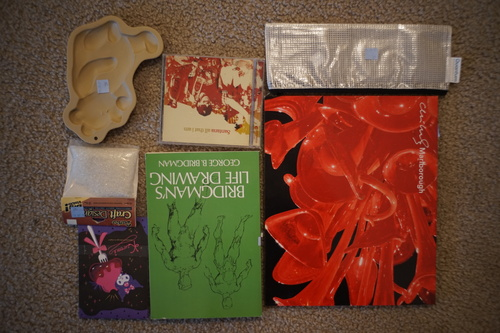

I finally made it through the last case of Ace Attorney. I started looking through art and stuff again and I can't wait for my boys Maximillion Galactica and Klavier Gavin. I haven't seen them in so long!!
Ryan bought me Pokemon Crystal a bit ago and he wanted to play it with me! I already caught a useless Hoppip! But I realized I did not download Pokemon Bank before the end of the eShop and I am sad now.
I got an email from Arachne the other night with a beautiful drawing of my Hina! ;_______; so blessed please look

Ryan and I took a lovely walk today! It sprinkled a bit but it was nice. I found a copy of Vampire Knight 1, but it was $5.50 and looked like it had been dipped in something. I've been trying to get reviews on that series but not many people have seen it!
I can't really eat cookies so I don't know why I bought this other than very cute
Two new microblogs appeared using my script ;u; I am so happy! I've been looking into issues with newsboat though and I'm kind of annoyed it can only parse one date format and not all 3 RFC822 timezone options.
U149 started!!! I'm so happy!! My favorite Nina got episode 2 and she is so cute ;AAAA; Gimme more anime about little girls doing cute things. PLUS the producer is super cute!!!! I was about to say this is the Best Anime of the 2020s, but Kakushigoto still takes the cake for me.
The other day, for the THIRD time, my SSD unmounted itself. PLEASE remind me to back up my drive and also buy another one.... seriously keep bugging me until I do it!!